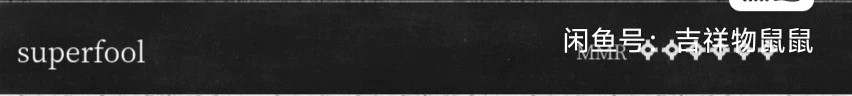
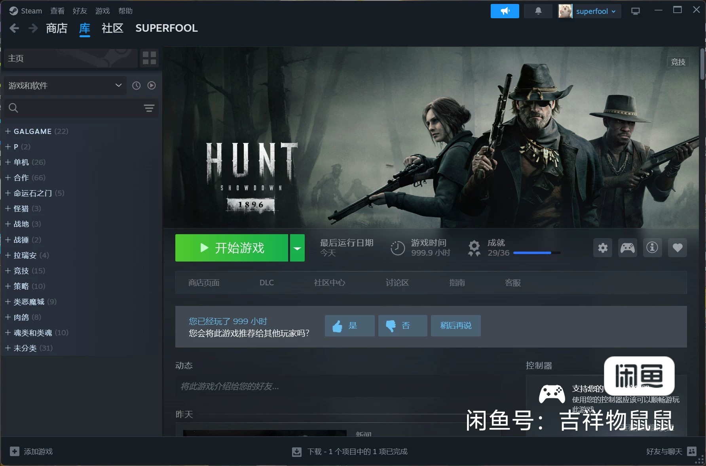
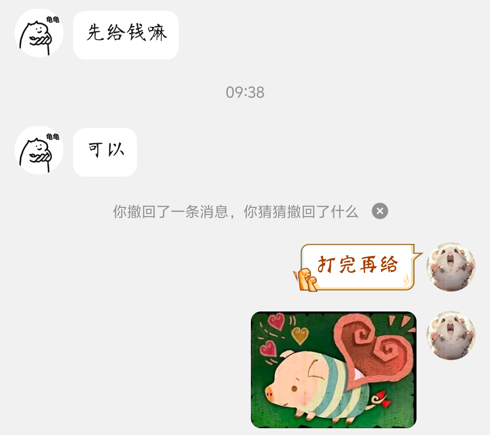
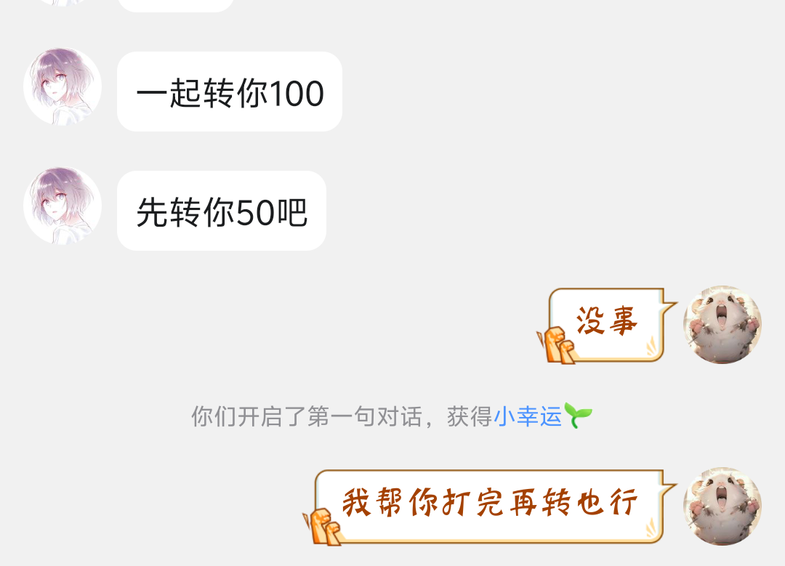

1.猎杀对决代练

订单
 猎杀对决技术略有小成，可以帮忙代练代肝
2.当主播
喜欢和弹幕互动，喜欢让别人看着自己玩游戏
3.看电影
电影能够有效打发时间，并且好电影能够让我进入思考，思考其后续以及立意
4.听音乐
听音乐能够有效得到放松，好听的音乐让大脑得到完全放空，并且身心愉悦
猎杀对决技术略有小成，可以帮忙代练代肝
喜欢和弹幕互动，喜欢让别人看着自己玩游戏
电影能够有效打发时间，并且好电影能够让我进入思考，思考其后续以及立意
听音乐能够有效得到放松，好听的音乐让大脑得到完全放空，并且身心愉悦